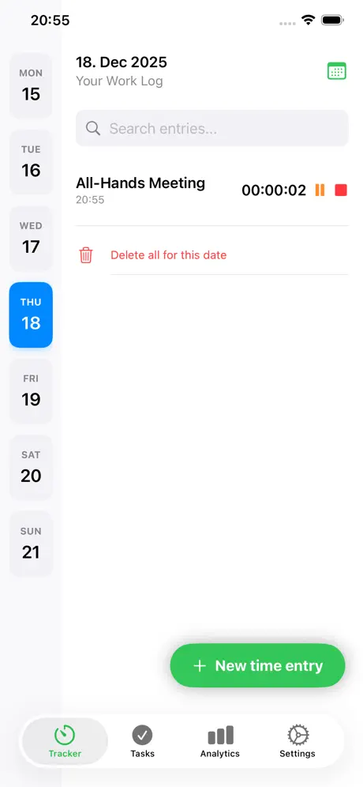
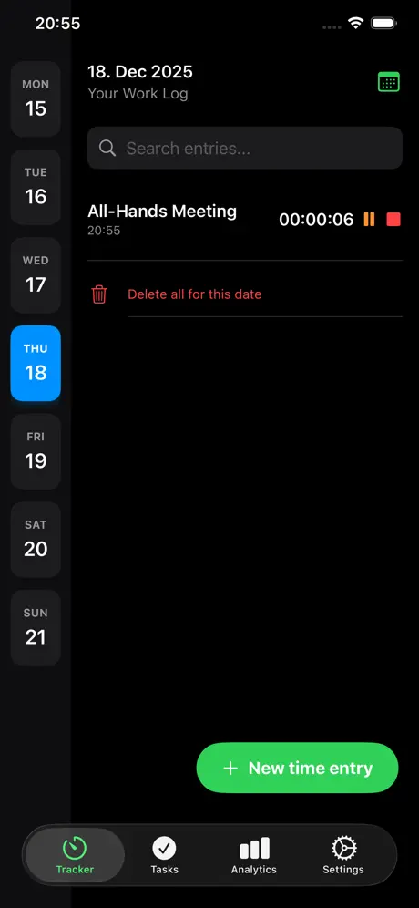
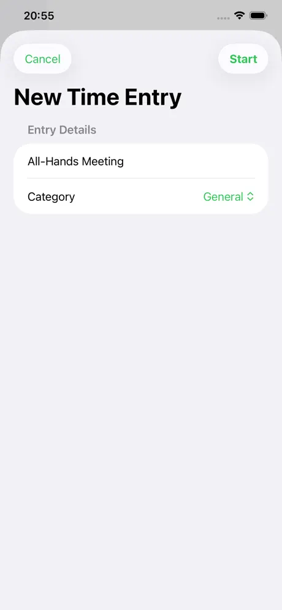
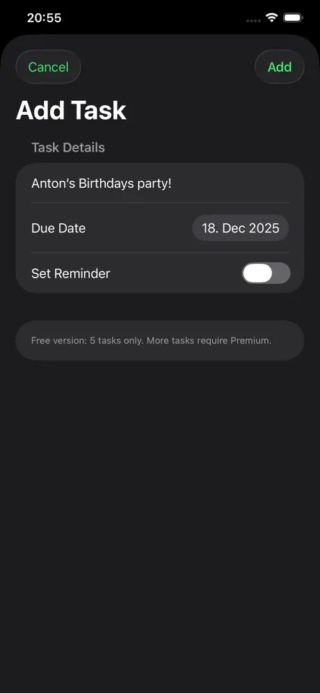
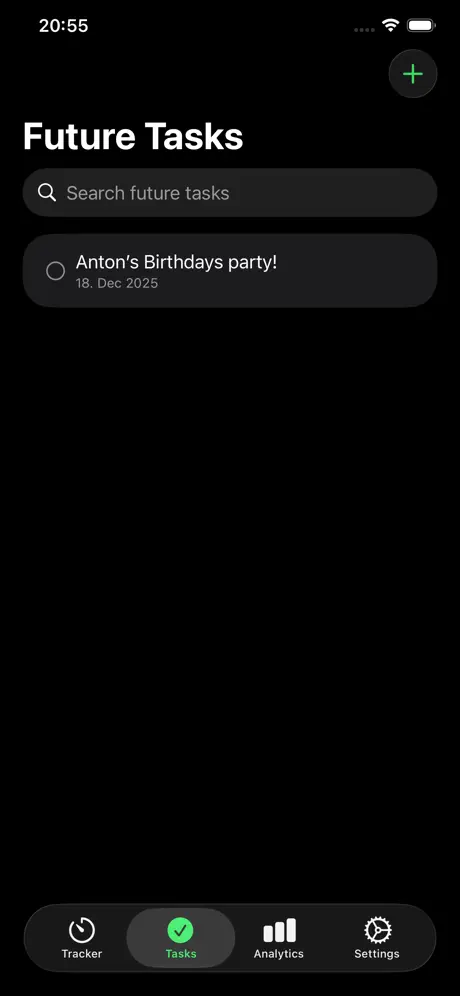
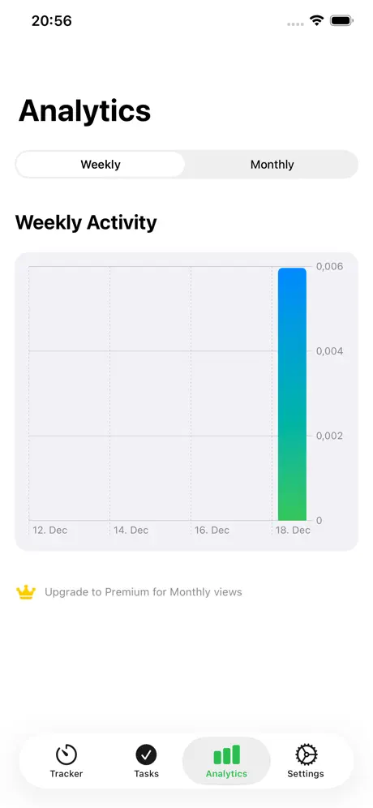

Master Your Time with Precision
Track client work, analyze productivity with beautiful charts, and plan your tasks in one elegant, private interface.

Track client work, analyze productivity with beautiful charts, and plan your tasks in one elegant, private interface.

Take control of your workday with the most intuitive path to managing your time, projects, and productivity.
Start, pause, and stop timers instantly. Never lose a billable minute again.
Organize your entries with professional categories like Client Work, Research & Development, Meetings, and Design.
Understand where your time goes with dynamic weekly and monthly activity charts.
Plan your upcoming week by adding tasks with due dates and completion tracking.
Your data is yours. All logs are stored locally on your device using industry-standard persistence.
A premium, "glassmorphism" design that feels right at home on your iPhone.




